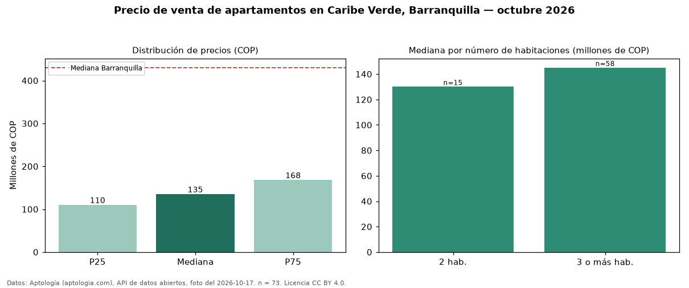

Precio de venta de apartamentos en Caribe Verde, Barranquilla — octubre 2026
COP 135 millones es el precio mediano de apartamentos en venta en Caribe Verde, Barranquilla (n = 73 avisos). Comparado con la mediana de la ciudad, COP 430 millones, la diferencia es de 69 % por debajo. Por mediana, es el puesto 46 de 46 barrios de Barranquilla con al menos 30 avisos de apartamentos en venta: entre los más económicos. El segmento con más oferta es el de 3 o más habitaciones (58 avisos, mediana COP 145 millones); pasar de 2 habitaciones a 3 o más habitaciones sube la mediana 12 %. 37 % de los avisos incluye parqueadero, y su mediana (COP 175 millones) está 30 % por encima de la general. La mitad central de los avisos va de COP 110 millones a COP 168 millones (razón 1,5), una dispersión moderada. El aviso más barato pide COP 85 millones y el más caro COP 200 millones. Datos: Aptología (aptologia.com), API de datos abiertos, licencia CC BY 4.0 — https://www.aptologia.com/venta/barranquilla/caribe-verde. Archivos: PDF de 2 páginas, CSV con las cifras y gráfica PNG.

| Avisos únicos | 73 |
|---|---|
| Percentil 25 | COP 110.000.000 |
| Mediana | COP 135.000.000 |
| Percentil 75 | COP 168.000.000 |
Fuente: avisos vigentes de portales inmobiliarios recopilados por Aptología, deduplicados (mínimo 30 avisos únicos por celda). Precios pedidos, no cerrados. Fecha: 2026-10-18.